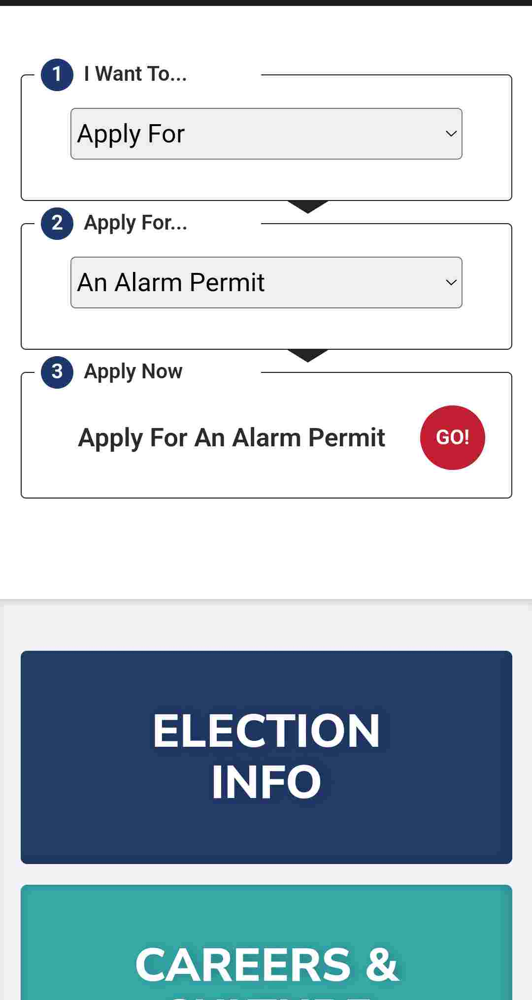

Whitespace & Clean Design
Apple
Apple
Apple is consistently a clean design. On their site, they avoid clutter and use large images with lots of neutral space. While the images are all in color the non-image content is minimalist and greyscale.
Hick's Law
Google has a lot of apps and functionality available on their home page, but they apply Hick's Law by showing very little on the main screen, then making more options available if the user wants to see them. Even when the user wants to see the various apps, they only show the most popular apps and the user needs to click on "More..." to see additional options.
PARC: Alignment
City of Plano
City of Plano site The City of Plano, Texas, is a good example of alignment. As the user scrolls down on the site, the elements are aligned horizontally. In the image above, we see that all the boxes are centered and aligned on both the left and right sides, giving a clean appearance.